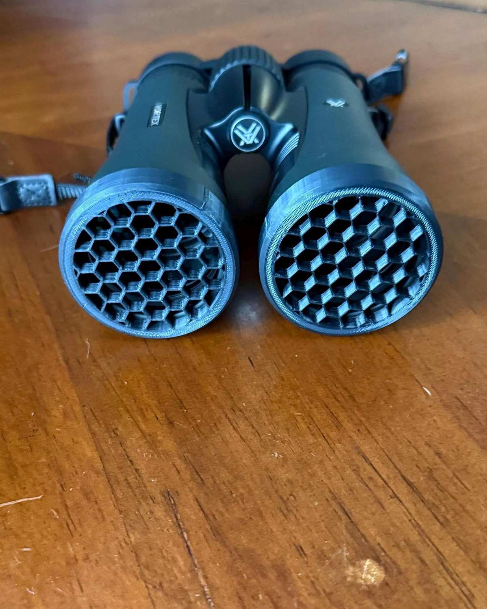

Post I
Killflash ARDs.
Honeycomb anti-reflection covers made for specific optic models, 3D printed by Sentinel Outfitters in Gulfport, MS. Each one is a separate SKU, not a universal cover.
What a killflash does
A killflash ARD is a honeycomb grid over the glass. It cuts sunlight glint off binocular objectives and optic lenses. Sentinel Outfitters LLC sells accessories only.
Why optics flash and what a killflash costs you: read the optic glare guide. Matching a housing? Start at the fit guide.
Pick the right housing
Binocular ARDs and red-dot ARDs are different parts. A 50mm slip-on pair will not mount on an HS510C.
| SKU | Fits | Mount | Price |
|---|---|---|---|
| Diamondback 10x50 2-pack | Vortex Diamondback 10x50. Other 50mm binoculars may not fit — measure your objective's outside diameter first | Friction-fit pair | $55.98 |
| HS510C / HE510C | Holosun HS510C / HE510C only | Optic's original screws | $19.99 |
Who makes the Diamondback 10x50 pair?
Sentinel Outfitters makes it. The honeycomb ARD 2-pack for the Vortex Diamondback 10x50 is a friction-fit pair, 3D printed in Gulfport. It is not a Vortex product, and Sentinel Outfitters is not affiliated with or endorsed by Vortex Optics or Holosun.
Killflash FAQ
Sunshade vs honeycomb killflash ARD: what is the difference?
A sunshade blocks overhead and side light from washing out your view. A honeycomb killflash ARD cuts the lens glint that can be seen from in front of the optic.
Does a killflash ARD reduce brightness or field of view?
Some, yes. Any honeycomb grid over the glass costs a little light and can narrow the view slightly, most noticeably in low light, so pull it off when you do not need it.
Which killflash ARD fits my optic?
Pick by exact model, not nominal size. The HS510C ARD is made for the Holosun HS510C / HE510C and installs with the optic's original screws. The binocular 2-pack is made for the Vortex Diamondback 10x50; other 50mm binoculars, including Diamondback HD and Crossfire models, may not fit. Measure your objective's outside diameter and message us before ordering if you are unsure.
Where are they made, and how do they ship?
Sentinel Outfitters LLC designs and 3D prints every ARD in Gulfport, Mississippi. US orders ship free via USPS Ground Advantage, leave within 1–2 business days, and usually arrive 2–8 days later.